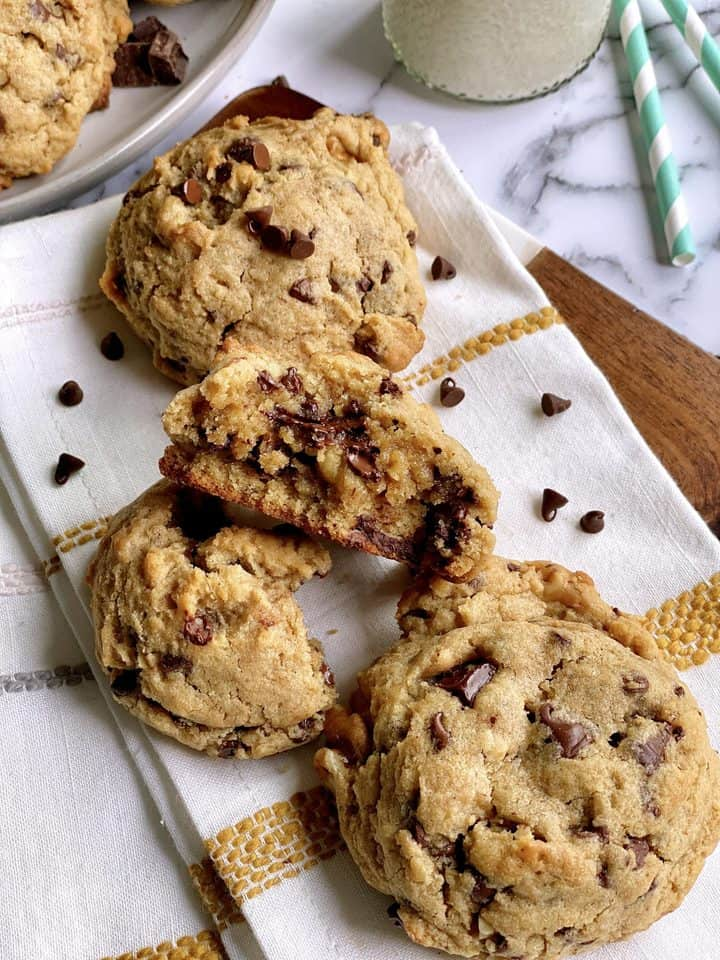

Fat Cookies

Yummy And Gooey Fat Chocolate Chip Cookies
These are my favorite cookies to eat. They are huge and really hit the spot. I usually
eat tons of cookies right away when I make them, but I can truly only eat one of these before
I have had enough. They're oh so satisfying!
Ingredients
- ½ cup butter cubed
- ¾ cup light brown sugar
- ¼ cup turbinado raw sugar
- 1 egg
- 1 egg yolk
- 1 tablespoon vanilla extract
- 2 cups flour white
- ½ teaspoon baking powder
- ½ teaspoon sea salt
- 1 cup dark chocolate chunks or semisweet
- ½ cup walnuts optional
Instructions
- Preheat oven to 350 degrees F and line a baking sheet with parchment paper or non-stick spray.
- Cream together the butter and both sugars.
- Next stir in egg, egg yolk and vanilla extract.
- In a separate mixing bowl, combine the flour, baking powder and salt.
- Start to fold the flour mixture into the sugar mixture until thoroughly combined.
- Stir in chocolate chips and walnuts.
- Scoop into even sized balls and place on baking sheet.
- Refrigerate dough for 2 hours or freeze for 90 minutes
- Bake for 9-12 minutes for medium sized cookies or 11-13 minutes for larger cookies.